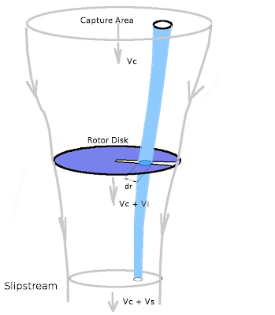
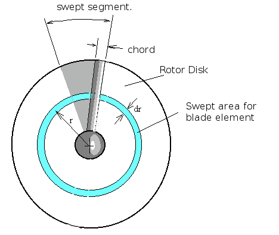
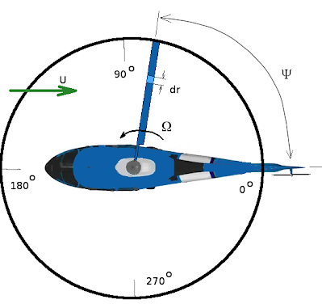
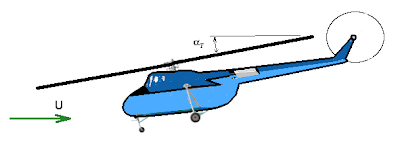
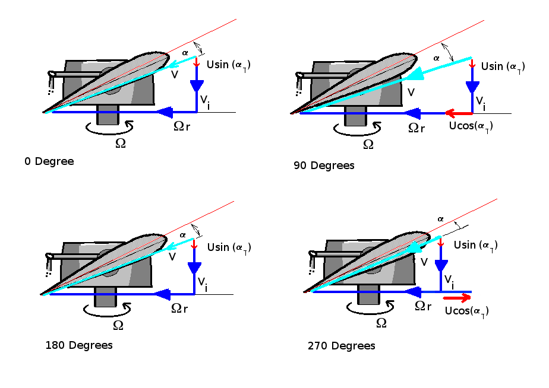
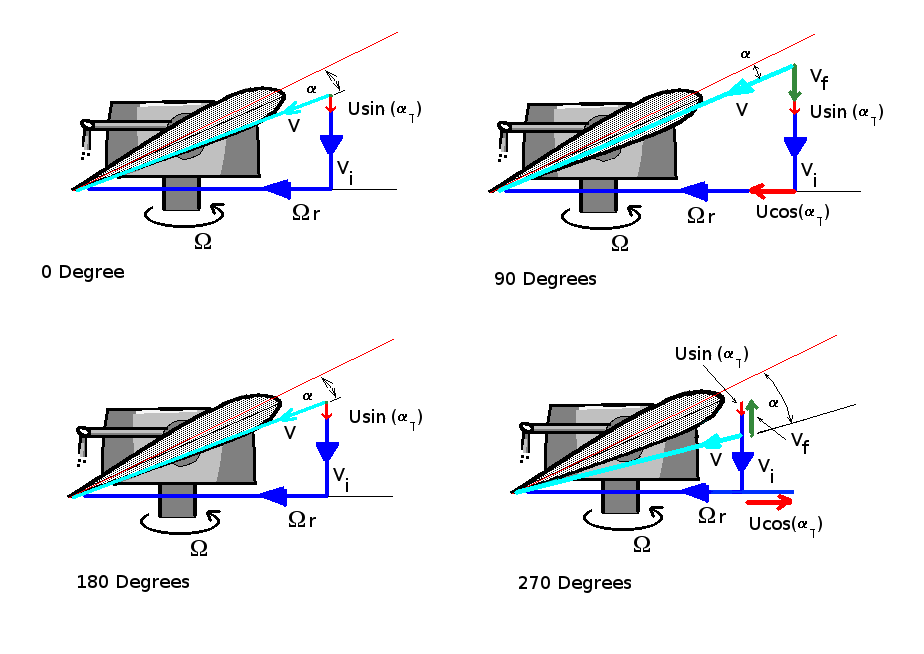

Blade-Element Analysis for Rotors
A relatively simple method of predicting the more detailed performance of a helicopter rotor is the use of Blade Element Theory. In this method the rotor is divided into a number of independent sections along the length. At each section a force balance is applied involving 2D section lift and drag with the thrust and torque produced by the section. At the same time a balance of axial momentum is applied. This produces a set of non-linear equations that can be solved for each blade section. The resulting values of section thrust and torque can be summed to predict the overall performance of the rotor.
The theory does not include secondary effects such as 3-D flow velocities induced on the rotor by the shed tip vortex or radial components of flow induced by angular acceleration due to the rotation of the blades. Modifications to the flow due to cyclic loading, blade flapping, rotor translation and coning angle are able to be made in a relative simple fashion but again this may not encompass all second order or phase-change effects.
In comparison with real rotor results this theory will over-predict thrust and under-predict torque with a resulting increase in theoretical efficiency of 5% to 10% over measured performance. Some of the flow assumptions made also breakdown for extreme conditions when the flow on the blade becomes stalled or there is a significant proportion of the rotor blade in windmilling configuration while other parts are still thrust producing.
This analysis can be used in conjunction with momentum theory to give refined details on the limits to ideal performance. It can be used to define required collective angles, the areas of blade stall, moments due to out-of-balance cyclic loading, etc. The theory has been found very useful for comparative studies such as optimising blade collective setting for a given cruise speed or in determining the optimum blade solidity for a rotor. It is a tool for getting good first order predictions of thrust, torque and efficiency for rotors under a large range of operating conditions without the computational expense of having to go to complex solutions such as Vortex Theory or full 3-D unsteady flow modelling.
Blade Element Subdivision
A rotor blade can be subdivided as shown into a discrete number of sections.
For each section the flow can be analysed independently if the assumption is made that for each there are only axial and angular velocity components and that the induced flow input from other sections is negligible. Thus at section AA (radius = $r$) shown above, the flow on the blade would consist of the following components.
where $V_0$ is the axial flow at rotor disk, $V_2$ is the tangential flow velocity vector and $V_1$ is the section local flow velocity vector, summation of vectors $V_0$ and $V_2$.
A rotor blade segment will be set at a given geometric pitch angle ($θ$), which will be a combination of collective, cyclic and blade twist. The local velocity vector will create a flow angle of attack on the section. Lift and drag of the section can be calculated using standard 2-D aerofoil properties. (Note: blades use a reference line = zero lift line, not section chord line). The lift and drag components normal to and parallel to the rotor disk can be calculated so that the contribution to thrust and torque of the complete rotor from this single element can be found.
The difference in angle ($φ$) between thrust and lift directions compared to the setting angle ($θ$) produces a local flow angle of attack ($α$)
$$α=θ-φ$$
where
$$φ=\tan^{-1}(V_0/V_2)≈{(V_i+V_c)}/V_2={(V_i+V_c)}/{Ωr}$$
Here, $V_0 = V_i + V_c$ where $V_i$ is the rotor induced flow velocity and $V_c$ is helicopter vertical climb velocity. As the induced and climb velocities are small in comparison to the rotor speed, $V_1≈V_2=Ωr$
Note: hover and vertical climb components are shown here, for forward flight there will be additional velocity components due to rotor tilt and forward speed. Forward speed will also produce variation in velocity components at different angles around the disk with blade sections heading in the direction of vehicle motion at some points and then retreating from vehicle direction at others. The modifications to $V_0$ and $V_2$ due to forward flight effects is shown later on in this section.
The elemental thrust of this blade element can thus be written as
$$ΔT=L\cos(φ)≈L=1/2ρV_1^2C_LcB.dr$$
where $ρ$ is the air density, $c$ is the blade chord and small angle approximations are used for $φ$.
The area generating the lift will be the element area multiplied by the number of blades ($B$) covering the circuit and the lift coefficient can be assumed to be linear with angle of attack ($α$).
$$C_L=2πα$$
As the angular speed of the rotor is much larger than the induced velocity component,
$$V_1=√{V_0^2+V_2^2}≈V_2=Ωr$$
thus,
$$ΔT=1/2ρ(Ωr)^2cB{2π}(θ-φ).dr$$
The thrust of the blade element may vary as it travels around the disk so this elemental component will need to be averaged along the blade path.
$$ΔT_{avg}=1/{2π}∫_0^{2π}ΔT.dΨ$$
where $Ψ$ is angular position of blade elements around the rotor disk.
Induced Velocity ($V_i$)
A major complexity in applying this theory arises when trying to determine the magnitude of the induced velocity ($V_i$) . $V_0$ is the sum of this rotor induced velocity ($V_i$) with additional increments due to climb speed ($V_c$), flapping velocity ($V_f$) and rotor/vehicle forward speed ($U$). The induced velocity is a function of the thrust produced which is in turn based on the affects produced by the induced velocity itself, hence the equations for $V_0$ become non-linear.
$V_1$ is roughly equal to the blade section's angular speed ($Ωr$) but may will also have increments due to advancing/retreating blade speeds for forward flight . In the case of tangential flow, the velocity is determined by known components, provided minor swirling effects are ignored, so $V_1$ can be calculated directly.
To calculate $V_0$ accurately, an axial flow momentum balance must be applied to predict the induced affects on a given blade element. As shown in the following diagram for hover or vertical climb, the axial flow components can be defined as a combination of induced velocity $V_i$ and climb speed $V_c$.
A typical stream-tube of flow passing through the radial element dr would have velocities.

$$V_0=V_i+V_c\text" and "V_2=Ω r$$
with local flow velocity at the blade section of $V_1=√{V_0^2+V_2^2}$ and an elemental mass flow rate through the disk section of
$${dm}/{dt}=ρV_0 .dA=ρV_0c.dr$$
Note: It is assumed that the downstream presure in the slipstream has equalised to be the same as the initial inlet area pressure.
Conservation of Momentum
The governing principle of conservation of momentum can be applied for the axial flow to obtain a solution for $V_i$.
For the axial direction, the change in flow momentum along a stream-tube starting upstream, passing through the rotor at section $dr$ and then moving off into the slipstream, must equal the thrust produced by this element of the blade.

In general, to remove the unsteady effects due to the rotor's cyclic motion, the stream-tube used is one covering the complete area of the rotor disk swept out by the blade element and all variables are assumed to be time averaged values over one circuit. For changes in flow as the blade moves around this cycle, a further subdivisions into blade passage sectors will need to be included.
Change in moment of the flow for one elemental segment due to the thrust created will be,
$$ΔT=\text"Change in momentum flow rate"$$
$$\table Δ T, =, {dm}/{dt}(V_{out}-V_{in});
, =, ρA_{out}(V_s+V_c)^2-ρA_{in}V_c^2;
, =, ρA_{out}(V_s^2+2V_sV_c+V_c^2)-ρA_{in}V_c^2$$
since mass flow is conserved from entry to slipstream,
$$ ρA_{in}V_c = ρA_{out}(V_c+V_s)$$
Thus$$\table ΔT, =, ρA_{out}V_s(V_s+V_c)+ρA_{out}V_c(V_s+V_c)-ρA_{out}(V_c+V_s)V_c; , =, ρA_{out}(V_s+V_c)V_s$$
Mass flow at disk will also be same as mass flow at exit,
$$ρdA(V_i+V_c)=ρA_{out}(V_s+V_c)$$
$$ΔT = ρdA(V_i+V_c)V_s$$
Conservation of Energy
By applying the conservation of energy, the work done by the rotor can be related to the kinetic energy change of the flow.
$$\text"Work done by element" = ΔT .dx$$
$$\text"Power (P) applied to the flow" = ΔT .V_0$$
$$P=ρ dA (V_i+V_c)V_s(V_i+V_c)=ρ dA (V_i+V_c)^2 .V_s$$
Power can also be found by evaluating kinetic energy change for the flow.
$$P={dE}/{dt}=1/2 {dm}/{dt}(V_{out}^2-V_{in}^2)$$
$$P=1/2 ρ{dA}(V_c+V_i)((V_s+V_c)^2-V_c^2)=ρ{dA}(V_i+V_c)^2 .V_s$$
$$1/2(V_s^2+2V_sV_c)=V_sV_i+V_sV_c$$
$$1/2V_s + V_c = V_i+V_c$$
therefore
$$V_s=2V_i$$
Thus
$$ΔT=ρdA(V_i+V_c)2V_i=ρ2V_i(V_i+V_c)r.dΨ.dr$$
where $r.dΨ.dr$ is the area of the elemental stream tube at the disk plane.
This can be integrated around the disk ring shown above to get the total momentum change at this radius.
$$ΔT_{avg}=2ρ∫_0^{2π} V_i(V_i+V_c)r.dr.dΨ$$
By equating the force balance prediction of thrust against the momentum change prediction, a non-linear equation containing the unknown variable ($V_i$) can be formed. If there is no cyclic variation in $V_i$ such as occurs for hover then
$$ΔT_{avg}=4πρV_i(V_i+V_c)r.dr$$
The torque requirement to be overcome by the motor will be,
$$ΔQ_{avg}=ΔT_{avg} .r$$
Iterative Solution procedure for Blade Element Theory.
An iterative method of solution for the elemental stream tube flow will be necessary due to the non-linearity. If there are no cyclic variations then this can be done on the average thrust and momentum change equations for a radial location. If there are cyclic variations in thrust loading then the process will need to be run on individual sector elements of the disk ring.
To start an initial guess of induced flow component $V_i$ is required. This is used to find the flow angle of attack on the blade. Blade section properties can then be used to estimate the element thrust and torque. With these approximate values of thrust and torque, the force/ momentum change equilibrium can be used to give improved estimates of the induced velocity $V_i$. This process can be repeated until value of $V_i$ has converged to within a specified tolerance.
It should be noted that convergence for this nonlinear system of equations is not guaranteed. It is usually a simple matter of applying some convergence enhancing techniques (ie Crank-Nicholson under-relaxation) to get a result when linear aerofoil section properties are used. When non-linear aerofoil properties are used, ie including stall effects, then obtaining convergence will be significantly more difficult.
Rotor Thrust and Torque Coefficients and Efficiency.
Once the converged value of $V_i$ is obtained, then the aerofoil section lift and drag can be used to predict thrust and torque for the blade element section.
The overall rotor thrust and torque will be obtained by summing the results of all the radial and sector blade element values.
$$\text"Thrust (T)"=∑ΔT_{avg}\text" and Torque (Q)"=∑ΔQ_{avg}\text" (for all dr elements)"$$
The non-dimensional thrust and torque coefficients can then be calculated along with the advance ratio at which they have been calculated.
$$C_T=T/{1/2ρΩ^2R^2A}\text" , "C_Q=Q/{1/2ρΩ^2R^3A}$$
where $R$ is the full radius of the blade, $ΩR$ is the rotor tip velocity and $A$ the area of the rotor disk.
Advance Ratio is
$$μ=U/{ΩR}$$
The rotor power coefficient will be defined as,
$$C_P=P/{1/2ρΩ^3R^3A}={QΩ}/{1/2ρΩ^3R^3A}$$
A measure of the efficiency of the rotor is the Figure of Merit. This is the ratio of ideal induced power over actual required rotor power. It is most conveniently defined for the hover case where total rotor power is the sum of power ($P_i$) used to create induced velocity (ie thrust) and blade drag profile power ($P_0$). In the hover case this sum is most closely approximating actual rotor power.
$$\text"FoM"=P_i/{P_i+P_0}$$
Cyclic Effects on Blade Aerofoil Flow.

For forward flight, maneuvering flight and when cyclic control inputs are applied, the local flow angles on the blade will vary around the disk path. In this case the thrust/momentum integration will need to be done with differing flow angles at different positions around the disk. Representative angle changes due to various effects are shown in the following figures. The velocity vectors are shown for limiting cases of $0^o$, $90^o$, $180^o$ and $270^o$. Intermediate values can be assumed to have a sinusoid variation between the limiting (maximum/minimum) values shown.

Angle changes due to forward speed.
The dominant contribution to local blade velocities is due to the in plane stream component $U.\cos(α_T).\sin(Ψ)$. Additional velocity components are shown in the following figure. All velocities are relative to the blade section.

If left unchecked the larger section velocity at $90^o$ (advancing blade) and the reduced velocity at $270^o$ (retreating blade) will produce a thrust distribution giving a stong rolling moment .
To counteract the problem all blades are articulated by various mechanisms to allow the blade to flap up and down as it travels oround the circuit. Again flapping can be assumed to be a sinusoidal motion, produced by this thrust imbalance. This results in additional vertical velocity components due to the motion of the blade. The exact magnitude of flapping requires a dynamic analysis of the moving blade system but the required amount can be estimated by assuming that the thrust distribution needs to be balanced and no residual rolling moment exists.

Assuming a maximum flapping displacement of $F$ at $180^o$ and $-F$ at $0^o$ then flapping velocity at tip will be $V_f\sin(Ψ)$. Maximum upward velocity of $V_f$ will occur at $90^o$ and maximum downward velocity at $270^o$. Note due to the location of the blade hinge point and flexure of the blade itself, the magnitude of the flapping velocity, $V_f$, will vary with radial position. This could be assumed to be a linear variation.
A removal of the rolling moment is achieved by reduction in section angle for the advancing blade and an increase in angle for the retreating blade. One of the limiting factors in the forward speed of a vehicle will be caused by the stalling of the retreating blade due to excessive angle of attack.
Software Implementation of Blade Element Theory
A computer version of this rotor analysis technique is available. This is a MATLAB script file for the implementation of the method. The source code in this script is by default a simple rotor design with linear properties. However with the inclusion of your own rotor geometry and section data a more accurate analysis of the specific rotor design can be obtained.
Click here to download rotor Program: rotor.m